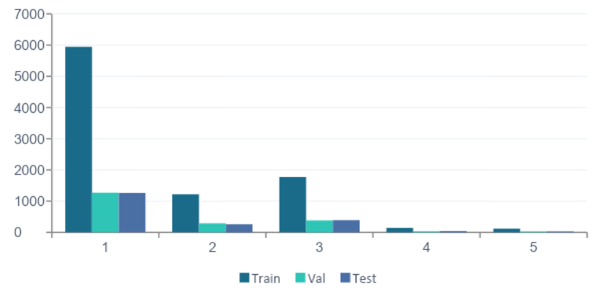
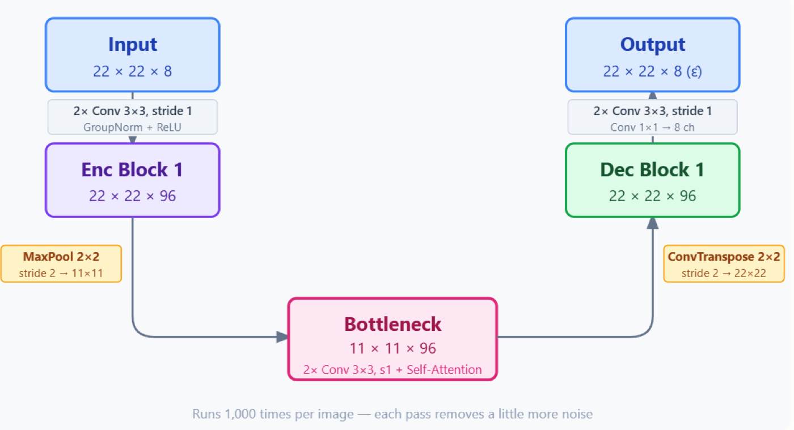
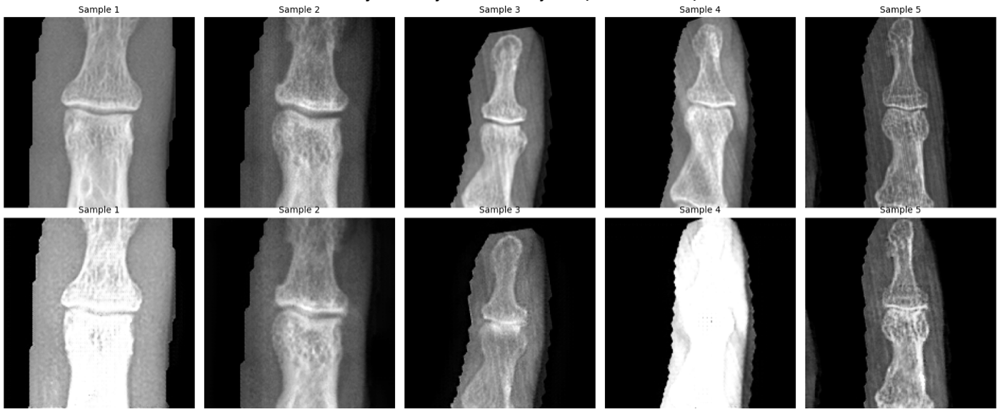
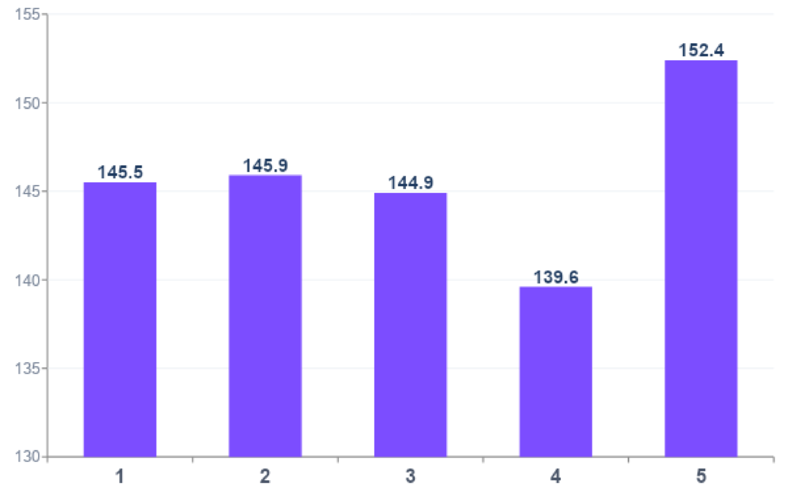
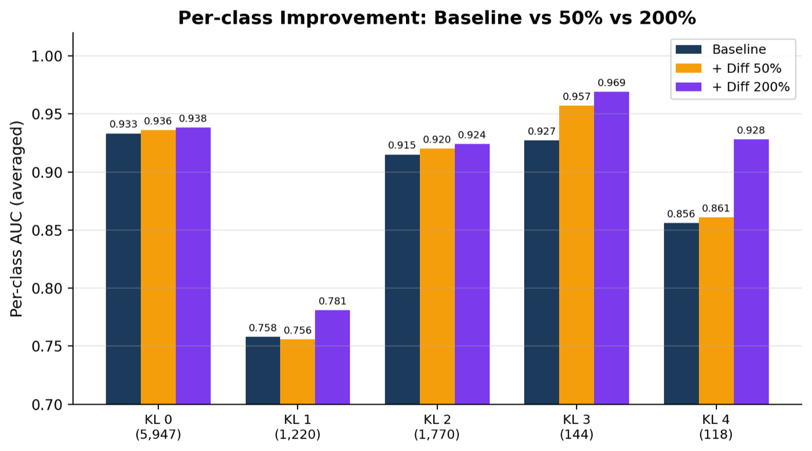
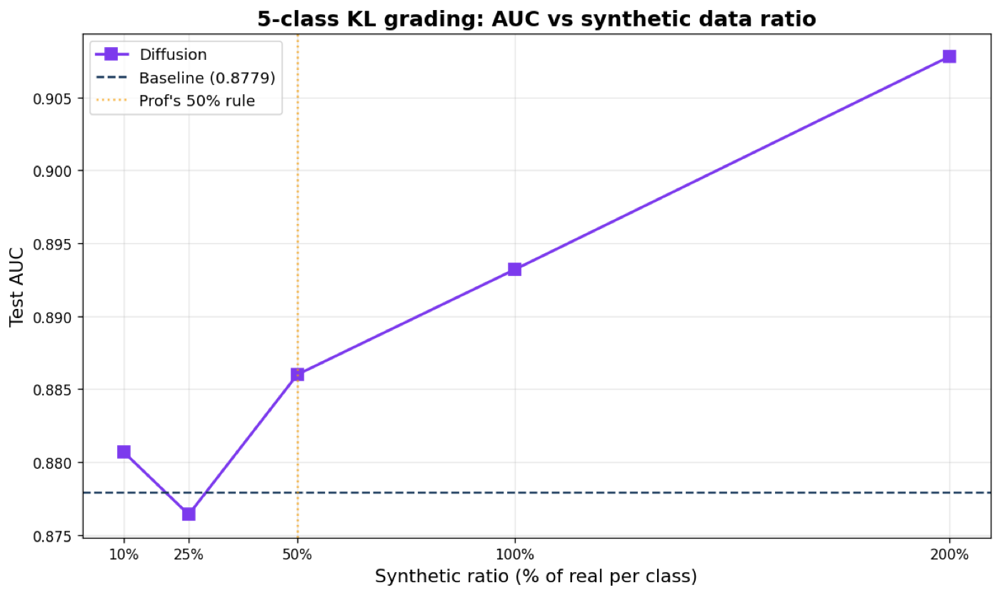
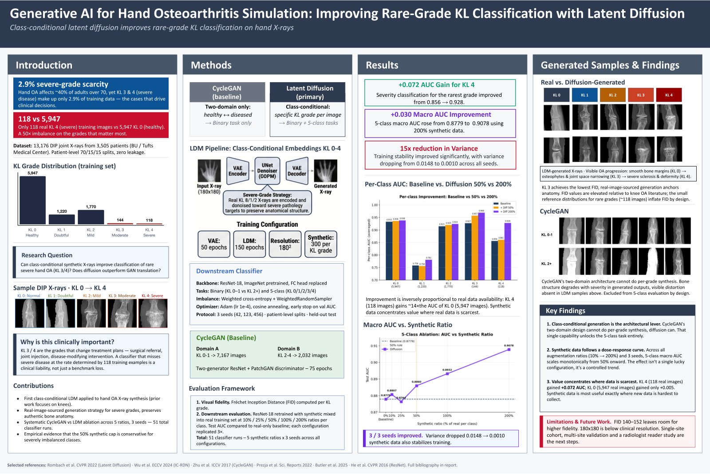

Teaching a diffusion model to draw the X-rays we don't have.
The first known class-conditional latent diffusion pipeline for hand osteoarthritis radiographs. It lifted 5-class severity AUC from 0.878 to 0.908 and recovered the near-invisible KL4 class by +0.072 AUC — all on a single cloud GPU.
Hand osteoarthritis severity is graded 0 to 4 on the Kellgren–Lawrence scale. In this 13,176-image dataset of DIP-joint radiographs, grades 3 and 4 — the severe cases — make up 2.9% of the data. There are 118 real KL4 images against 5,947 KL0 images. That is a fifty-fold imbalance on exactly the grades that change a treatment decision.
A classifier trained on that skew learns to be confidently wrong about severe disease. You cannot simply collect more severe scans, and naive oversampling just memorises the same handful of images. So the question became: can you synthesise clinically faithful severe-grade X-rays that measurably improve the classifier, without leaking a single patient between train and test?

- Curated and de-leaked the data. 13,176 DIP-joint X-rays from 3,505 patients at Boston University and Tufts Medical Center, split 70/15/15 at the patient level and stratified by maximum KL grade, with zero leakage verified programmatically. A real bug surfaced here: matching images on the internal scoring ID gave a 0% match rate. Switching to the OAI participant ID took it to 100%.
- Compressed with a VAE. Each 180×180 grayscale radiograph becomes a 22×22×8 latent — a 16:1 compression — so diffusion runs cheaply and spends its capacity on anatomy rather than pixels.
- Trained a class-conditional latent diffusion model. A DDPM UNet denoises in latent space with the KL grade injected by scale-and-shift at every block, plus classifier-free guidance. It generates 300 images per grade, 1,500 in total.
- Sourced the severe grades from real anatomy. KL0–2 are generated from pure noise. KL3–4 are seeded from a real KL0–2 image re-noised at 60% strength, which preserves authentic bone structure — and produced the lowest FID of any grade for KL3 at 139.6.
- Built a CycleGAN baseline to beat. Unpaired healthy ↔ diseased translation, the obvious alternative approach.
- Retrained and evaluated honestly. ResNet-18 retrained on real plus synthetic at 10–200% ratios, three seeds each — 51 classifier runs — scored by per-grade AUC on a held-out patient set never used in training or generation.



| Metric | Result |
|---|---|
| Overall 5-class macro AUC | 0.878 → 0.908 |
| KL4 (severe) AUC | 0.856 → 0.928 |
| KL3 AUC gain | +0.041 |
| Seed-to-seed variance | 0.0148 → 0.0010 |
| Seeds improved | 3 of 3 |
| CycleGAN baseline | no reliable gain |


The CycleGAN baseline delivered no reliable improvement, and it is worth being precise about why: this was a structural limitation, not a tuning failure. CycleGAN maps between two domains. It has no grade-conditioning input, so it can express "healthy ↔ diseased" and nothing finer. That makes the five-class task unreachable by design, no matter how long you train it. Bone structure also degraded visibly with severity in its outputs.
The honest limitations of the diffusion approach: FID sits at 140–152, which leaves real room for higher fidelity. 180×180 is below clinical resolution. And this is a single-site cohort — multi-site validation and a radiologist reader study are the next steps before anyone should believe it clinically.
Synthetic data concentrates its value exactly where real data is scarcest — and the architectural lever is class-conditioning, not model size. That single capability is what makes the five-class task possible at all.
